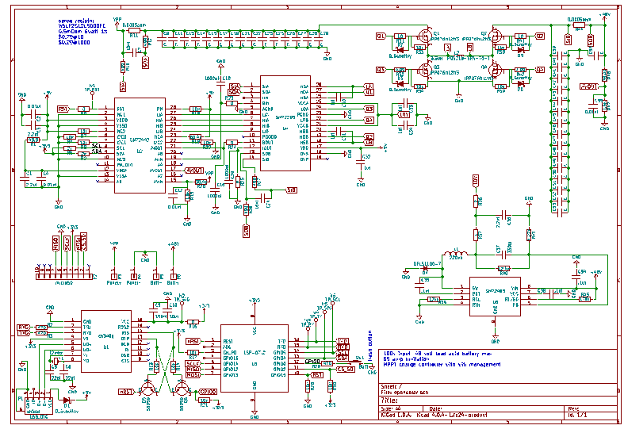

Project details
Using the TI SM72442, I am designing a maximum power point tracking solar charge controller
The design should accomadate 100VDC input, up to 48v battery, and 65amp output current.
ESP8266 wifi chipset uses I2C to communicate with SM72442 for remote system management.
Status
The circuit board is being designed in KiCad, an open source EDA tool.
You can find the schematic and PCB files on Github.
As of Feb 2017, the schematic has been created in Kicad, BOM is being worked on, and soon the PCB layout will begin.
Originally I started this project using BQ24650, an all in one MPPT IC. But it was limited to 30v open circuit and had no I2C communication